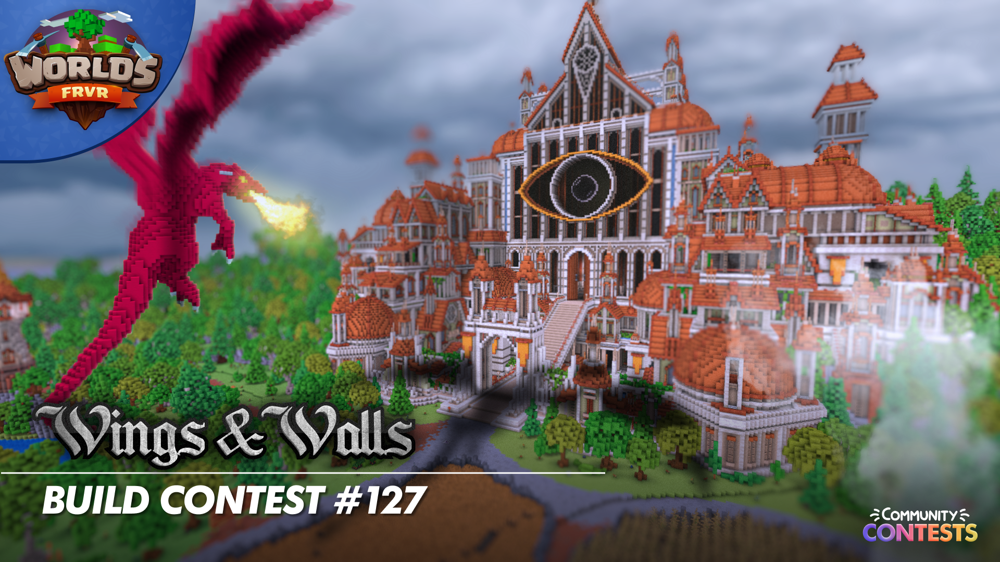
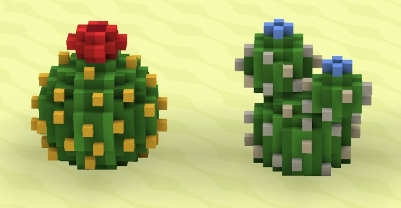
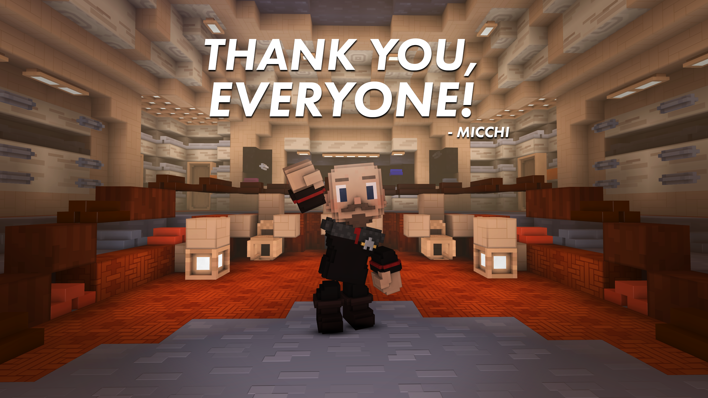

Contest #127: Wings and Walls

The first Community Contest is up.
Unleash your imagination in the 'Wings and Walls' Building Contest, where the enchanting world of castles, dragons, and other magnificent flying fantasy creatures takes flight! Prepare to amaze and be amazed as builders compete to bring the extraordinary realm of fantasy to life in this magical contest!
https://www.reddit.com/r/WorldsFRVR/comments/14dandq/community_contest_127_wings_and_walls/?utm_source=share&utm_medium=web2x&context=3
Update: 0.77.0

Into the Desert - 0.77.0
• Greatly improved desert biomes can now be found in all generated worlds
• New *Unlockable Prop* system allows players to find rare varieties of plants and other props in Lost Frontier and unlock them for use everywhere you play
• New desert flora: two varieties of Cactorb and two of Cactiny
- Can you find the rare new Cactorb and Cactiny?
- The seeds of these desert plants can be used as a new source of various paint colors
• Add decorative spice plant props (unlockable through Lost Frontier)
• Add "Farming and Flora" tab to the build menu for all nature-related props
• Update Settlement build menu tab icon to include more current prop models
• Fix unable to move Settlements large distances
• Fix graphical glitch on Intel Iris Xe GPUs (bug credit: IceSpikes)
Micchi transitioning to different project

*Hello, fellow Worlds players!*
Since I came onboard Worlds FRVR exactly 3 years ago, it was very much still in its infancy. There were practically no players to speak of and many of the current features you enjoy today had not been developed yet. Since then, me, the developer team and all of you lovely players have been instrumental in making our community grow and blossom in to what it is today with contests, events, feature updates and all manners of community interactions.
Today I am announcing that I will as of June no longer be the community manager of Worlds FRVR. I will however remain within the FRVR ecosystem as part of a brand new content and marketing team which will be producing media content for many games within the FRVR portfolio, Worlds included. This means that I will still be part of this game and see you all frequently, but not at the same capacity and extent as before. This means that I will not be hosting contests, events, streams and other tasks related to the growth of this fine community.
I would like to thank the developer team for being awesome to work with this entire time, as well as Benjaminsen in particular for bringing me on-board three years ago. I would also like to thank all of you for making this the best job I've ever had and for helping me. There would be no community to speak of if not for all of you.
It has been an enormous privilege to spend time with all of you fine players, new and veterans alike, and I am confident with the new features underway, Worlds FRVR will continue to grow in to something amazing.
*Signing off,*
*MicChiFRVR* 🖖
ABOUT:
Welcome to this amazing fan website! Please note that I'm **not** affiliated with Worlds FRVR's official team. I'm a passionate fan who has created this platform to celebrate and appreciate the game. Enjoy exploring and connecting with fellow enthusiasts here!